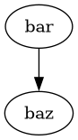

Graphviz Example
There is a plugin for sphinx called sphinx.ext.graphviz which adds support for embedding graphviz graphs
in your documents. One can achieve this by following these instructions:
Make sure
graphvizis properly installed on your machine/environment, for instance it can be installed viacondalike this:conda install -c conda-forge graphviz
Make sure that this plugin would be recognized in your
conf.pyby adding it to theextentionslistNote
In this project the
conf.pyis generated bycmakefrom theconf.py.infile and therefore this addition should be added toconf.py.insince it’s the template file for the generatedconf.py.extentions = [ ... "sphinx.ext.graphviz", ... ]
After those instructions you should be able to add the following directives in your .rst files
.. graphviz::
digraph foo {
"bar" -> "baz";
}
Here is how it looks:
